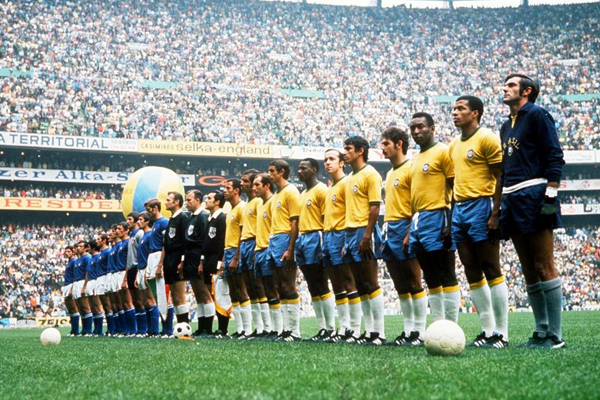
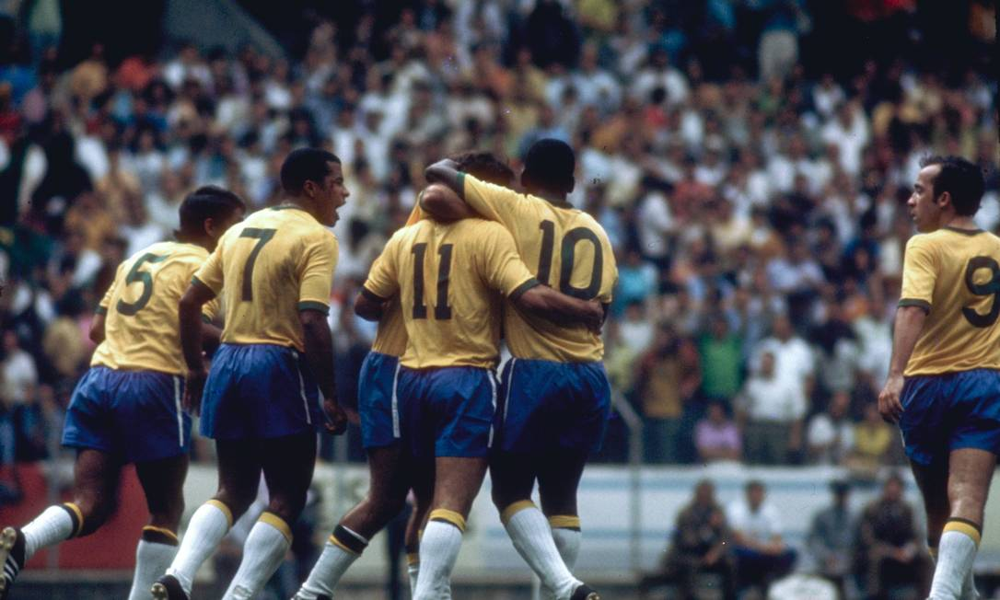

A Seleção de Ouro
A Copa de 1970, no México, é considerada por muitos a maior exibição de futebol já vista. Com Pelé no auge, a equipe venceu a Itália por 4 a 1 na final, conquistando o tricampeonato e a posse definitiva da Taça Jules Rimet
Elenco

Félix, Carlos Alberto Torres, Brito, Piazza, Everaldo, Clodoaldo, Gérson, Jairzinho, Pelé, Tostão e Rivelino.
Goleadores

Jairzinho (7 gols), Pelé (4 gols), Rivelino (3 gols)